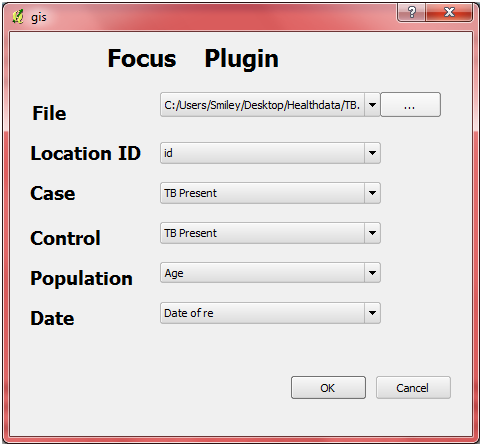
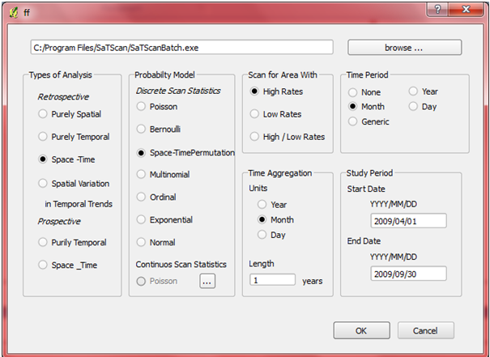
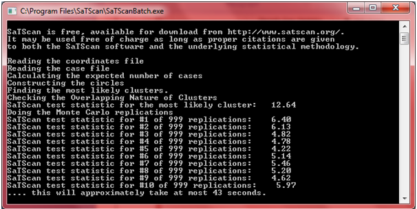
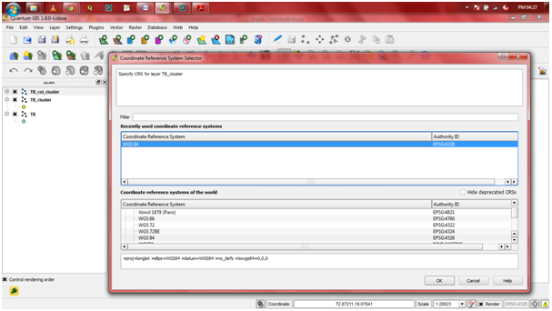
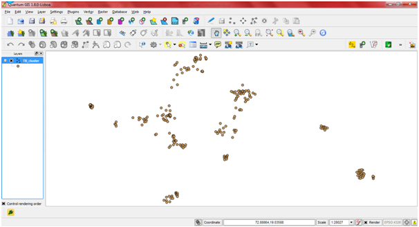

As of now QGIS has not been incorporated with any analysis tools. This plugin aims to provide QGIS an additional feature of analysis by utilising SaTScan. All input files needed for SaTScan are created by the plugin and the output files from it are read by the plugin and fed in to QGIS to visualise the analysis results. The plugin provides benefit to both the software ? an analysis tools for QGIS and a way to visualize the results given out by SaTScan.
Before using SaTSViz, the user is required to install SaTScan on the system. SaTScan can be downloaded, for free, from http://www.satscan.org/
The plugin takes a shapefile file, specifically and preferably a point shapefile, which has the coordinates in Lat/Long form, as input.
After filing in the required fields in the LOCATION ID, CASE, CONTROL, POPULATION and DATE (these are chosen from the field names in the shapefile), plugin produces four files:
These files are the inputs for SaTScan. All the files may not be used by SaTScan; Depending upon the analysis model, selected by the user, few or all of the files can be used by SaTScan.
Note
User is requested to go through the SaTScan user manual (provided with the plugin), before using AVP, to get familiar with functioning, input and output of the plugin.
SaTScan, in addition to the files mentioned above, needs one more file, PARAMETER file which has all the parameter values that SaTScan will use for analysis. The user chooses the type of analysis, probability model to be used etc. by clicking on the radio buttons present in the plugin. After this the plugin produces the parameter file (.prm file).
The plugin calls SaTScan and gives all the above files as input. After analysis, three files are created by SaTScan:
.gis file and .col file is read by the plugin and required fields are taken and are converted to two shapefiles:
Description of these two files is provided in coming sections.
The consists of two main dialogs. The first dialog asks the user to enter the input (path of the shapefile to be analysed)and choose the fields of the shapefile, which they want to use for making the input files (.cas, .pop, .ctl).
After clicking OK on the dialog box, another dialog opens that asks the user to choose the type of analysis, probability model, time aggregation etc. It also asks the user to browse and specify the path of SaTScanBatch.exe, which is the SaTScan executable file, for analysing the input file.
After clicking OK on it, intermediate files are formed and SaTScan opens command prompt for analysis.
After that, a window to choose Coordinate Reference System appears in QGIS. Click OK on this window.
On clicking OK, the results (points in the clusters formed by SaTScan) are displayed in QGIS.
There are four core functions that work behind the plugin:
This function takes path of the shapefile to be analysed, expects user to specify the fields that are to be used to make case, control, population files and gives .cas, .ctl, .pop, .geo files as output.
This function takes the values chosen by the user, in the second dialog box, as arguments and creates a .prm file, which will be used by SaTScan for analysis.
This function takes the path of the parameter file and SaTScanBatch.exe and calls SaTScan to start the analysis.
After the analysis is done and output files are created by SaTScan, this function reads the .gis, .col, .geo files. It makes two shape files and its supporting files :